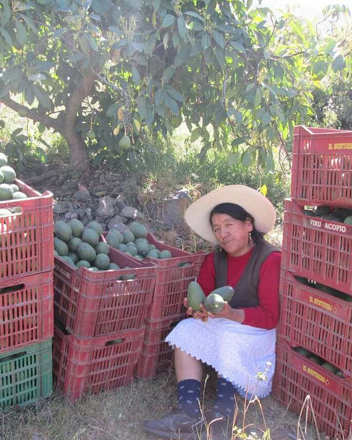

¿Volvió a su nivel de 2019?
¿Cuánto gana un trabajador informal?
¿Quién trabaja en la informalidad?
Tasa de informalidad por grupo (barra) frente a 2019 (punto gris). Elige cómo agrupar a los trabajadores aquí abajo. La región se elige en la barra de filtros, con un clic en el mapa o con un clic en el gráfico «2019 frente a…» de la derecha.
¿Dónde trabajan? ,
2019 frente a , por departamento
Casi 3 de cada 10 asalariados del Estado tienen un empleo informal
Entre los asalariados de la administración pública, la informalidad pasó de en 2019 a en 2025. Detrás está la locación de servicios: personas que trabajan para el Estado con RUC y recibo por honorarios, pero sin planilla ni seguro de salud pagado por el empleador. Por eso el INEI clasifica su empleo como informal (su variable oficial marcaba así al 98–100 % de ellos entre 2019 y 2023).
de los asalariados informales del Estado trabaja por locación de servicios ()
Informalidad y locación de servicios en el Estado, 2015–2025
Asalariados del Estado por tipo de contrato,
Tres hallazgos
Comparación nacional entre 2019 (antes de la pandemia) y 2025. Solo llamamos «significativo» a lo que supera la prueba al 95 % con el diseño muestral de la ENAHO.
La informalidad no volvió a su nivel prepandemia
Pasó de 72,6 % en 2019 a un pico de 76,6 % en 2021 y está en 73,7 % en 2025 (IC 95 %: 72,9–74,5). La diferencia con 2019 es significativa, aunque por poco. De los ~1,14 millones de empleos que se sumaron entre 2019 y 2025, ~1,04 millones son informales: 9 de cada 10.
Se informaliza el empleo que debería ser formal
Casi 8 de cada 10 nuevos asalariados no tienen seguro pagado por su empleador. La informalidad sube entre asalariados (54,2 → 57,4 %), universitarios (40,5 → 44,8 %), en empresas de más de 100 trabajadores (19,2 → 23,5 %) y entre los asalariados del Estado (21,0 → 28,5 %). Todos los cambios son significativos.
Un problema urbano con una brecha territorial enorme
Todo el aumento neto de informales es urbano: la tasa urbana sube de 66,2 % a 68,4 %, mientras la rural se mantiene en torno a 95 %. En 2025 la tasa va del 59,7 % del Callao al 90,3 % de Huancavelica, y 13 de 25 departamentos superan el 80 %. El campo, en detalle abajo ↓


En el área rural, casi 95 de cada 100 trabajadores tienen un empleo informal
La tasa rural apenas se movió entre 2019 (95,0 %) y 2025 (94,7 %). Tres de cada cuatro informales rurales trabajan en el agro (74 % en 2025), que el INEI cuenta como sector informal, y uno de cada cuatro es trabajador familiar no remunerado (24 %). Es una informalidad estructural, distinta de la urbana: en el campo no aumentó después de la pandemia porque ya era casi total.
Otros hallazgos
Datos que complementan los tres hallazgos principales (2019 frente a 2025, nivel nacional salvo que se indique).
- Microempresas: el 72 % de los ocupados trabaja en negocios de 1 a 10 personas, y 9 de cada 10 de ellos son informales.
- Género: la brecha entre mujeres y hombres se redujo de 5,8 a 4,0 pp, pero porque subió la informalidad de los hombres (70,0 → 72,0 %, significativo), no porque bajara la de las mujeres (75,8 → 76,0 %).
- Ingresos: en 2025 el ingreso mensual mediano de un informal es S/ 898 y el de un formal S/ 2 003. La brecha se achicó: el informal ganaba el 37 % de lo que gana un formal en 2019 y el 45 % en 2025.
- Territorio: Madre de Dios es el único departamento con un aumento significativo (+8,5 pp); ninguno tuvo una reducción significativa.
Metodología y validación
- Datos: microdatos anuales de la ENAHO 2015–2025 (INEI), módulo 500 (empleo e ingresos) y módulo 400 (salud), unidos por vivienda, hogar y persona.
- Universo: población ocupada de 14 años a más (
ocu500 = 1), ocupación principal. Entre 56 600 y 70 000 ocupados encuestados por año. - Informalidad: el INEI publicó su variable oficial (
ocupinf) hasta 2023; desde 2024 ya no está en la base ni en el diccionario de la ENAHO. La reconstruimos con sus criterios (recuadro de arriba) para toda la serie, de modo que 2015–2025 sea comparable. - Validación: en 2015–2023 nuestra variable coincide con la oficial en el 98,9–99,7 % de los trabajadores, con diferencias de −0,2 a +0,4 pp en la tasa (tabla). Además, la tasa de 2019 calculada con
ocupinf(72,7 %) coincide con la cifra oficial difundida para ese año. - Ponderación e inferencia: todas las cifras usan el factor de expansión
fac500a. Los intervalos de confianza al 95 % se estiman por linealización con conglomerados y estratos (departamento × estrato). Un cambio es «significativo» si |diferencia| > 1,96 × error estándar. - Ingresos: ingreso mensual de la ocupación principal (monetario, imputado por el INEI), mediana ponderada, en soles corrientes; se compara formal e informal dentro de cada año.
Validación contra la variable oficial del INEI
¿Por qué el INEI reportó 70,9 % para 2024 y este tablero dice 74,1 %?
Limitaciones
- En 2023 la reconstrucción sobreestima la tasa oficial en 0,4 pp. Si el sesgo persiste en 2024–2025, el aumento frente a 2019 estaría más cerca de 0,8 pp.
- En 2020 parte de la encuesta se hizo por teléfono; su comparabilidad es menor.
- Los conteos (millones de trabajadores) dependen de las proyecciones de población del INEI y no llevan intervalo de confianza.
- Por departamento y grupo, las muestras son menores y los intervalos amplios: los cambios pequeños no son concluyentes.
- Es un análisis descriptivo: muestra dónde y en quién cambia la informalidad, no sus causas.
Fuentes
- INEI, Encuesta Nacional de Hogares (ENAHO), microdatos 2015–2025, módulos 400 y 500 (descargados el 1/11/2026).
- IPE en ProActivo, informalidad ENAHO 2019 (72,7 %) frente a EPEN 2022–2023.
- Gestión, informalidad 2024 según la EPEN (70,9 %).
- Límites departamentales: INEI, geojson simplificado usado en el diplomado.
- Foto rural: Elia Granados Solís, Cosecha de paltas en Aguar-Caujul, Wikimedia Commons, CC BY-SA 4.0.
- Foto: Diego Delso, Wikimedia Commons, CC BY-SA 4.0.
- Código y datos procesados: repositorio en GitHub.

Implicancias y preguntas abiertas
Ideas para la discusión de política pública que se desprenden de los hallazgos. No son conclusiones causales: señalan dónde mirar y qué falta investigar.
Formalizar empieza por casa
Una parte creciente del empleo público se contrata por locación de servicios, sin planilla ni seguro. Medir cuántos de estos contratos cubren funciones permanentes y subordinadas permitiría dimensionar el problema y el costo de regularizarlo.
¿Qué entidades y niveles de gobierno explican el aumento?
Del registro a la protección
El aumento viene sobre todo de asalariados sin seguro, no de negocios sin RUC. Las políticas centradas solo en registrar empresas podrían no llegar a este grupo; la fiscalización laboral y el costo de la planilla son piezas a evaluar.
¿Qué peso tienen los costos laborales frente a la capacidad de fiscalización?
El grueso está en los negocios pequeños
Siete de cada diez ocupados trabajan en negocios de hasta 10 personas, y casi todos son informales. Formalizar a este grupo probablemente requiere mejorar su productividad, no solo simplificar trámites.
¿Qué regímenes tributarios y laborales funcionan para unidades de 1 a 10 trabajadores?
El título protege cada vez menos
La informalidad entre universitarios subió 4,3 pp. Puede reflejar más profesionales trabajando como independientes o por honorarios, también en el Estado. Vale la pena distinguir la informalidad «elegida» de la que se impone.
¿Cuánto de este aumento es empleo por honorarios en ocupaciones profesionales?
Estrategias regionales, no una sola receta
Trece departamentos superan el 80 % y la distancia con Lima y Callao no se cerró. Madre de Dios, el único con un aumento significativo, merece un análisis propio de qué sectores lo explican.
¿Qué actividades explican el salto de Madre de Dios?
Medir para poder comparar
El paso de la ENAHO a la EPEN deja sin una serie oficial comparable desde 2015 ni cifras departamentales consistentes. Publicar la variable de informalidad en la ENAHO, o un empalme oficial entre ambas encuestas, facilitaría el seguimiento de las políticas.
¿Cómo empalmar ENAHO y EPEN sin romper la serie?